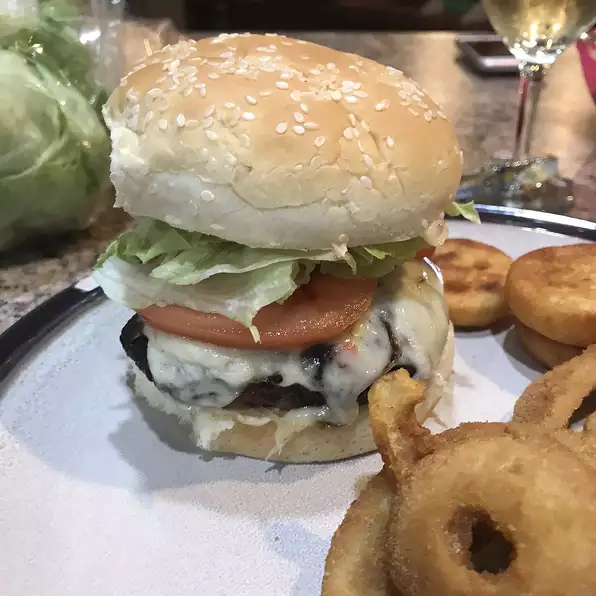

A jazzy way to spice up the boring basic burger that will tantalize your taste buds! Cajun spiced mayonnaise is the perfect complement to these spicy beef burgers.
Prep: 25 mins
Cook: 15 min
Total: 40 mins
Preheat grill for medium-high heat. In a small bowl, mix together the mayonnaise and 1 teaspoon of Cajun seasoning. Set aside.
In a large bowl, mix together the ground sirloin, jalapeno pepper, onion, garlic, 1 tablespoon Cajun seasoning, and Worcestershire sauce using your hands. Divide into 4 balls, and flatten into patties.
Lightly oil the grilling surface, and place the patties on the grill. Cook for about 5 minutes per side, or until well done. During the last 2 minutes, lay a slice of cheese on top of each patty. Spread the seasoned mayonnaise onto the insides of the buns. Put burgers in the buns, and top with lettuce and tomato to serve.